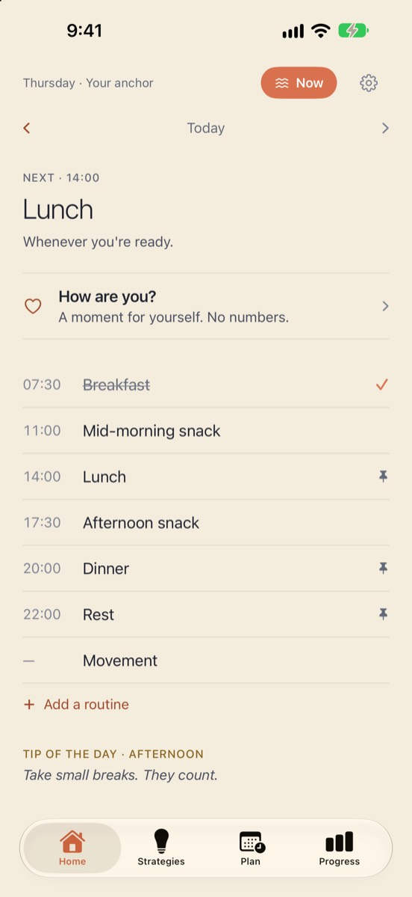
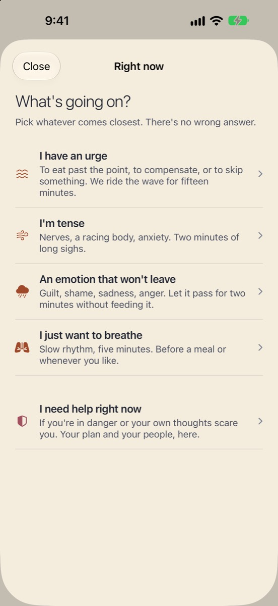
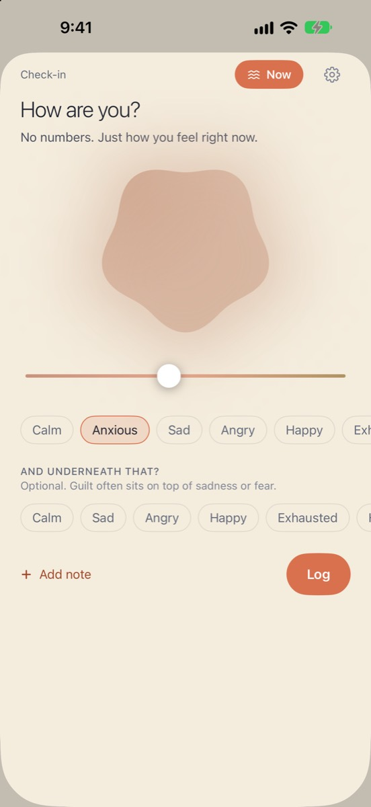
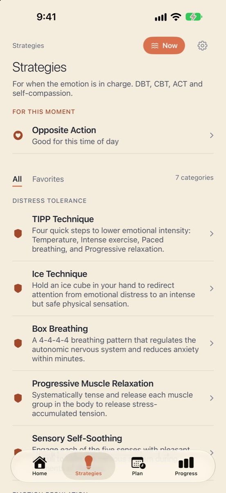

Seize Apps · iOS
Anchor
Anchor accompagne les personnes qui se rétablissent d’un trouble des conduites alimentaires. Des routines qui te portent — repas, repos, mouvement — confirmées d’un toucher ; une seule porte, Maintenant, pour le moment difficile : surfer sur l’envie, respirer avec un guide, laisser passer une émotion ou ouvrir ton plan de sécurité. Pas de calories, pas de poids, pas de jours d’affilée à tenir. Jamais.
Télécharger dans l’App StoreAnchor n’est pas un dispositif médical et ne remplace pas une prise en charge professionnelle. Si tu es en danger ou si tes propres pensées te font peur, appelle le numéro d’urgence de ta région.




Ce qu’elle fait
Une seule chose, bien faite.
Des routines, pas des règles
Repas, repos et mouvement en blocs de la journée. Confirme d’un toucher ; si une journée ne se passe pas comme prévu, ce n’est pas grave, et Anchor te le dit.
Une porte pour le moment difficile
Surfer sur l’envie avec quinze minutes d’accompagnement, une respiration guidée sans retenir ton souffle, « La laisser passer » pour une émotion forte, et un plan de sécurité avec tes proches et les lignes d’écoute de ta région, à deux touchers.
Sans chiffres
Un point du jour sur tes émotions sans score, des stratégies issues de la TCD, de la TCC, de l’ACT et de l’autocompassion avec leurs fondements bien visibles, et tes progrès montrés comme la forme de ta semaine, pas comme une note.
Confidentialité
À toi, pas à nous.
Tout ce que tu saisis reste sur ton appareil et dans ton propre iCloud privé. L’accès à Santé est facultatif et en lecture seule (sommeil, activité), jamais le poids ni la nutrition, et ces données ne quittent jamais le téléphone. Pas de mesure d’audience, pas de publicité, pas de conversation avec une IA.
Une app de Seize Apps.